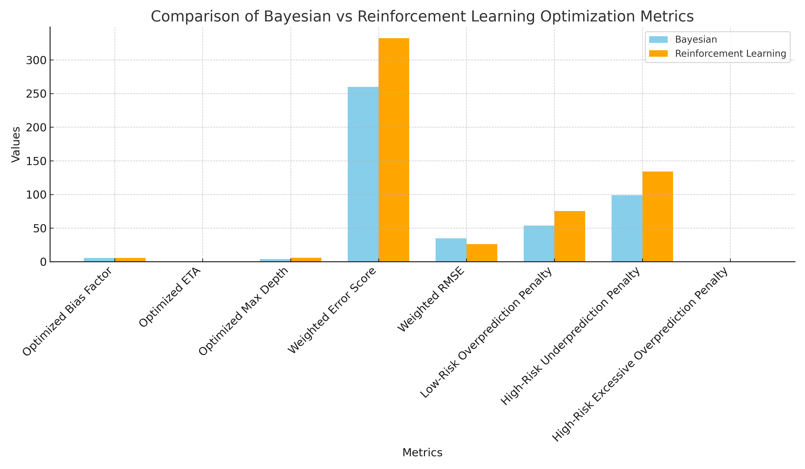
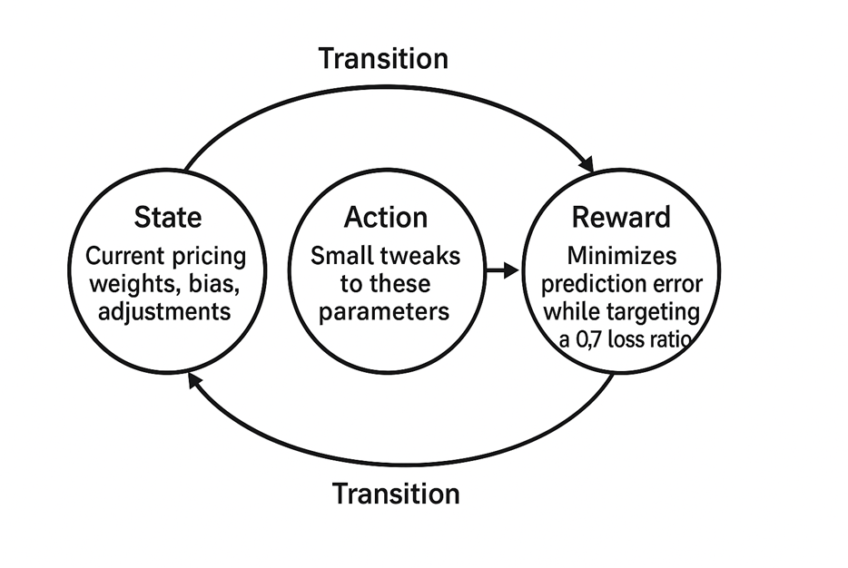
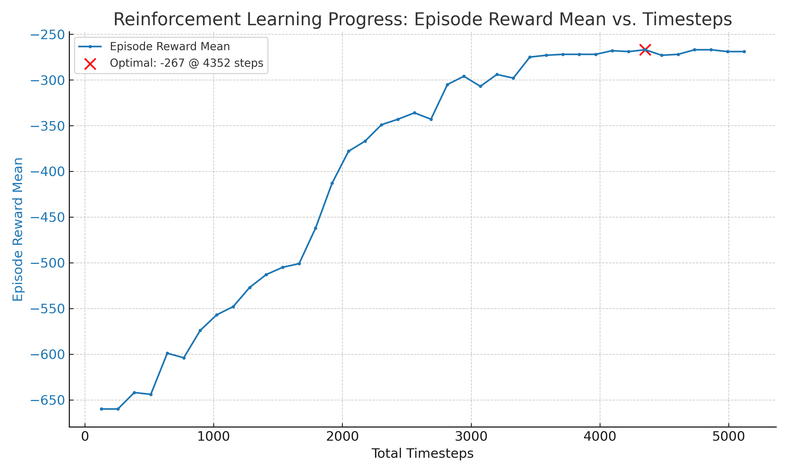
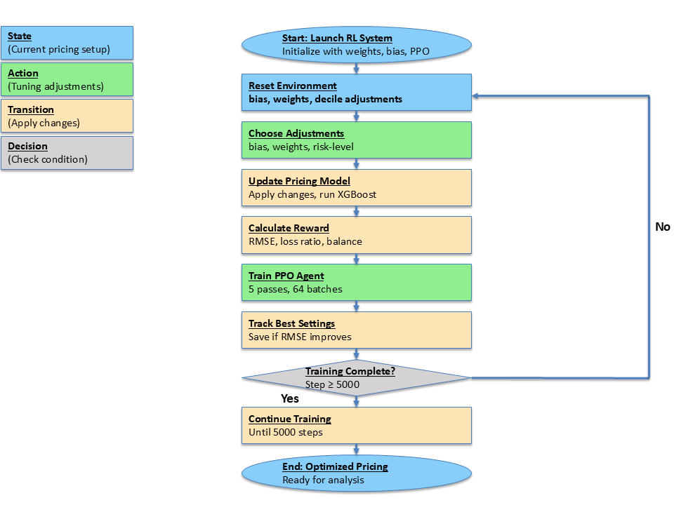

Dynamic Pricing Optimization using Reinforcement Learning
1. Introduction to Pricing Optimization with AI
In this video presentation, viewers will explore a dynamic pricing optimization model for personal insurance using reinforcement learning (RL), accessible via a previously shared dashboard. The presentation addresses the pricing challenge of balancing accuracy, profitability, and customer value through a data-driven approach.
Key Points:
Pricing Challenges
The model predicts insurance claim severities based on factors like age, vehicle use, and car model to price policies accurately and fairly. Pricing requires balancing three goals:
- Accurate severity predictions to avoid over- or underestimating claims.
- Competitive premiums to retain customers while covering costs.
- Customer satisfaction through fair pricing to build trust.
Limitations of Traditional Methods
Traditional approaches like Generalized Linear Models (GLM) and Bayesian optimization lack dynamic adaptability, struggling to adjust to new data or changing customer behaviors, resulting in less accurate and fair predictions.
Reinforcement Learning Solution
RL offers a dynamic, adaptive approach that fine-tunes model parameters (e.g., weights for age, vehicle use) through trial and error. Unlike traditional methods, RL learns from feedback, optimizing for accuracy, competitiveness, and fairness.
RL Results
Over 5120 optimization steps, RL reduced prediction errors, balanced over- and under-predictions, maintained a target loss ratio of 0.7, and outperformed Bayesian optimization with a lower root mean square error, ensuring more accurate and fair pricing.
What's Next?
The presentation will demonstrate how RL works, showcase achieved results, and discuss future improvements for better business and customer outcomes in insurance pricing. Stay tuned for an in-depth exploration of this innovative approach.
2.My Solution to Reinforcement Learning
In this video presentation, titled "My Solution to Reinforcement Learning," viewers will learn about an advanced solution for optimizing a model tuning dashboard for personal insurance pricing using reinforcement learning (RL) with the Proximal Policy Optimization (PPO) algorithm. The focus is on predicting insurance claim severity based on factors like age, vehicle use, and car model to set accurate and fair premiums.
Building the Solution with RL and PPO
- RL, using the PPO algorithm, acts as a smart assistant that dynamically adjusts model weights (e.g., importance of age) and biases to fine-tune predictions.
- It balances multiple objectives: minimizing prediction errors, targeting a loss ratio of 0.7 for financial stability, and ensuring fairness by penalizing over- and under-predictions for low- and high-risk customers.
- RL outperforms static methods like Bayesian optimization, offering flexibility and adaptability.
Why RL Was Chosen
- RL iteratively adapts to data patterns over time, unlike static methods that provide one-time solutions.
- Over 5120 steps, RL improved its reward from -660 to -267, ensuring the pricing model remains accurate and fair as customer behaviors or market conditions change.
Comparison with Bayesian Optimization
A bar chart compares RL to Bayesian optimization across key metrics: 
- Weighted Root Mean Square Error (RMSE): RL achieves a lower RMSE, indicating more accurate predictions closer to actual claim costs.
- High-Risk Under-Prediction Penalty: RL prioritizes capturing true risk for high-risk customers, accepting higher penalties to avoid underestimation.
- Low-Risk Over-Prediction Penalty: RL’s higher penalty reflects its focus on fairness, minimizing overcharging low-risk customers.
- High-Risk Excessive Over-Prediction Penalty: RL’s adaptability captures complex data patterns, prioritizing overall accuracy.
- Other Metrics (e.g., learning rate, bias): RL optimizes these marginally better than Bayesian.
RL outperforms Bayesian across most metrics, delivering a more accurate, fair, and balanced pricing model.
Project Benefits
- Better Accuracy: Lower RMSE ensures premiums reflect true claim costs.
- Improved Fairness: Balanced pricing for low- and high-risk customers builds trust and satisfaction.
- Financial Balance: Maintains a 0.7 loss ratio for competitiveness and stability.
- Adaptability: RL’s iterative learning keeps the model responsive to new data, keeping the business ahead.
Conclusion and Future Steps
The presentation concludes by highlighting RL with PPO as a superior, dynamic solution compared to traditional methods, with the bar chart demonstrating reduced errors and enhanced fairness. Future steps include refining RL, scaling to larger datasets, and applying it to new challenges. Viewers will see how RL’s adaptability and performance drive better accuracy, customer satisfaction, and financial outcomes for the insurance business.
3. Markov Decision Process (MDP) Framework
In this video presentation, titled "Markov Decision Process (MDP) Framework," viewers will explore how the MDP framework powers reinforcement learning (RL) in optimizing a model tuning dashboard for predicting insurance claim severities based on factors like age, vehicle use, and car model. The goal is to achieve accurate, fair, and financially balanced pricing.
MDP Framework Overview
The MDP framework, illustrated in a diagram, is the backbone of the RL approach, comprising four components in a cyclical process:
- State: Represents the current model settings, including weights for factors (e.g., 0.5 for accuracy, 0.2 for age, 0.15 for vehicle use, 0.15 for car model) and a bias factor (e.g., 5.4).
- Action: Small, deliberate tweaks to weights or bias (e.g., increasing age weight by 0.05 or decreasing bias by 0.01) to test configurations.
- Reward: A score reflecting the action’s effectiveness, designed to minimize prediction errors, target a 0.7 loss ratio for financial balance, and ensure fairness by penalizing over-predictions for low-risk customers and under-predictions for high-risk customers.
- Transition: Moves the agent to a new state with updated weights and bias after an action, restarting the cycle to refine the pricing model.
How MDP Fits the Project
- The MDP framework is ideal as it enables systematic exploration of weight and bias combinations, learning from feedback without needing historical data (Markov property).
- Starting from an initial state, the RL agent makes tweaks, evaluates rewards, and transitions to new states, progressively optimizing the model for accuracy and fairness. 
Results and Benefits
- Over 5120 steps, the RL agent improved the reward from -660 to -267, indicating better predictions (to be shown in upcoming charts).
- The agent minimized root mean square error while maintaining a 0.7 loss ratio, ensuring fair and sustainable pricing.
- The structured MDP approach automates tedious manual tuning, saving time and enhancing outcomes for the insurance business.
Conclusion and Future Steps
The presentation emphasizes that the MDP framework provides a clear roadmap for RL to make data-driven adjustments, steadily improving model accuracy and fairness. Viewers will see how this structured approach optimizes pricing and learn about future refinements, such as enhancing the reward system or exploring additional parameters. Stay tuned for further insights and results.
4. How the Reinforcement Learning Process Works
In this video presentation, titled "How the Reinforcement Learning Process Works," viewers will gain insight into the mechanics of the reinforcement learning (RL) process powering the model tuning dashboard for predicting insurance claim severities based on factors like age, vehicle use, and car model. The aim is to set accurate and fair premiums.
Engine Under the Hood
The RL process comprises two core components:
- Environment (Weight Optimization): Acts as a testing ground where the RL agent adjusts weights (e.g., importance of age, accuracy) and bias. The environment evaluates these tweaks by comparing predictions to actual claim costs, providing feedback via a reward (e.g., assessing if increasing age weight by 0.05 improves accuracy and fairness).
- PPO Algorithm: The brain of the system, Proximal Policy Optimization (PPO) updates the agent’s strategy (policy) over ~5000 time steps. It ensures safe, gradual updates, refining the approach based on feedback. Over 5120 steps, the reward improved from -660 to -267, showing better adjustments (to be shown in a chart).
Convergence (Finding the Best Settings)
The RL process aims to converge on optimal weights and bias, minimizing the root mean square error (RMSE), which includes prediction errors, fairness across risk levels, and a target loss ratio of 0.7 for financial balance. By the end of 5120 steps, the agent achieved settings that significantly reduced errors, enhancing model accuracy and reliability.
Results (Outperforming Other Methods)
RL, using the weight optimization environment and PPO, outperformed Bayesian optimization by achieving a lower RMSE, indicating superior accuracy. It also ensured fairness by balancing predictions for low- and high-risk customers, crucial for equitable pricing.
Visualizing Progress
A chart (presented in the slide) illustrates the reward improvement from -670 to ~-200 over 5120 steps, with each point reflecting average performance across episodes. The curve rises, peaking around 4352 steps (highlighted in red), where the agent reaches optimal performance, minimizing errors and stabilizing the loss ratio. Beyond this, improvements plateau, signaling convergence. 
Conclusion and Future Steps
The presentation underscores that the RL process, driven by the weight optimization environment and PPO, optimizes the pricing model in a smart, automated way. It evaluates adjustments over 5000+ steps, converges to optimal settings, and surpasses methods like Bayesian optimization, delivering a more accurate, fair, and financially balanced model. Viewers will learn about the results and future steps to build on this success. Stay tuned for further details.
5. Step-by-Step RL Process Flowchart
Reinforcement Learning Process Flowchart
In this video presentation, viewers will explore a detailed flowchart outlining the step-by-step reinforcement learning (RL) process for optimizing the model tuning dashboard, aimed at predicting insurance claim severities using factors like age, vehicle use, and car model to set accurate and fair premiums.
1. Launch RL System
Initialize the RL system with starting weights (e.g., 0.5 for accuracy, 0.2 for age, 0.15 for vehicle use, 0.15 for car model), a bias factor (e.g., 5.4), and the Proximal Policy Optimization (PPO) algorithm (configured with 128 steps, 64 batch size, 5 epochs, and a 0.0003 learning rate). This sets the initial pricing state.
2. Reset Environment
The weight optimization environment resets weights, bias, and risk-level (decile) adjustments to a clean starting point (e.g., initial weights or best state found), ensuring no interference from prior iterations.
3. Choose Adjustments
The RL agent selects tweaks to weights (range: -0.05 to 0.1), bias (range: -0.05 to 0.05), or risk-level adjustments (e.g., increasing age weight from 0.2 to 0.25 or decreasing bias from 5.4 to 5.39) to improve fairness, guided by PPO’s policy to maximize future rewards.
4. Update Pricing Model
Apply adjustments to the pricing model using XGBoost, a gradient boosting algorithm, to generate updated claim severity predictions. The model is rerun with new weights/bias, and predictions are evaluated against actual claim costs, transitioning to a new state.
5. Calculate Reward
The environment computes a reward based on:
- Root Mean Square Error (RMSE): Measures prediction accuracy (lower is better).
- Loss Ratio: Targets 0.7 (claims paid/premiums collected), with penalties for deviations.
- Fairness Penalties: For over-predictions (low-risk customers), under-predictions (high-risk customers), and excessive over-predictions (high-risk).
The reward function (to be shown in Python) combines RMSE, loss ratio penalty, fairness penalties, and bias regularization. Rewards improved from -660 to -267 over 5120 steps, indicating better adjustments.
6. Train PPO Agent
The PPO agent uses reward feedback to refine its policy over 5 epochs and 64 batches, collecting state, action, and reward data. Techniques like clipped surrogate objectives ensure stable updates, favoring high-reward adjustments (e.g., increasing age weight) in future cycles.
7. Track Best Settings
The system monitors RMSE improvements. If new settings lower RMSE (e.g., from 100 to 90), they are saved as the best state. Optimal settings were found at ~4352 steps with a reward of -267, where improvements plateaued.
8. Decision Point
Check if training has reached 5120 steps (40 iterations of 128 steps each). If not, loop back to step 2 (reset environment) to continue training. If yes, proceed to step 9.
9. End Process
Training concludes, and the optimized pricing model (using the best settings from step 7) is ready for analysis/deployment. The final model at 4352 steps, with a reward of -267, achieved lower RMSE, maintained a 0.7 loss ratio, ensured fairness, and slightly outperformed Bayesian optimization.
Conclusion
The flowchart illustrates the iterative process—state, action, transition, and decision—systematically optimizing the pricing model. It improved rewards from -660 to -267, reduced prediction errors, and balanced accuracy, financial stability, and customer satisfaction, making the model robust and ready for deployment. Viewers will understand the comprehensive workflow from initialization to finalization, with clear visuals of the process. 
6. Path to Pricing Grid
We analyze Definity's Personal Insurance book of business in more detail.
7. RL Stands out
This presentation discusses the actions taken by Definity to enhance profitability and risk management.
8. Next Steps - Customer Perceived Value
We discuss Definity Insurance's key insights for Q1 2024.